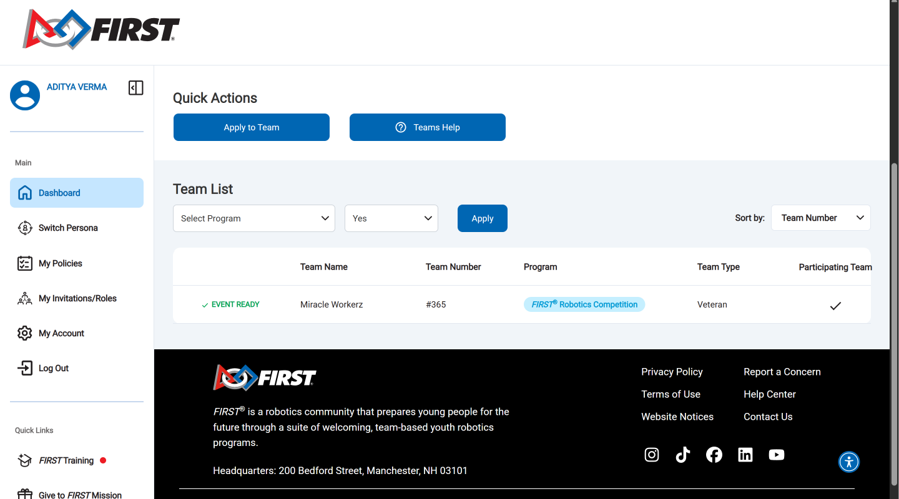
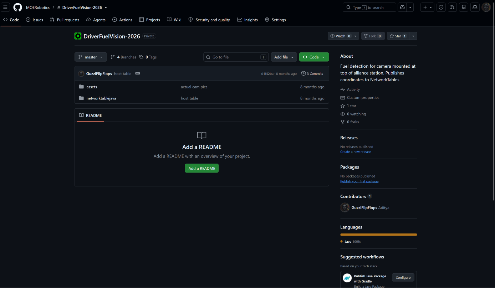
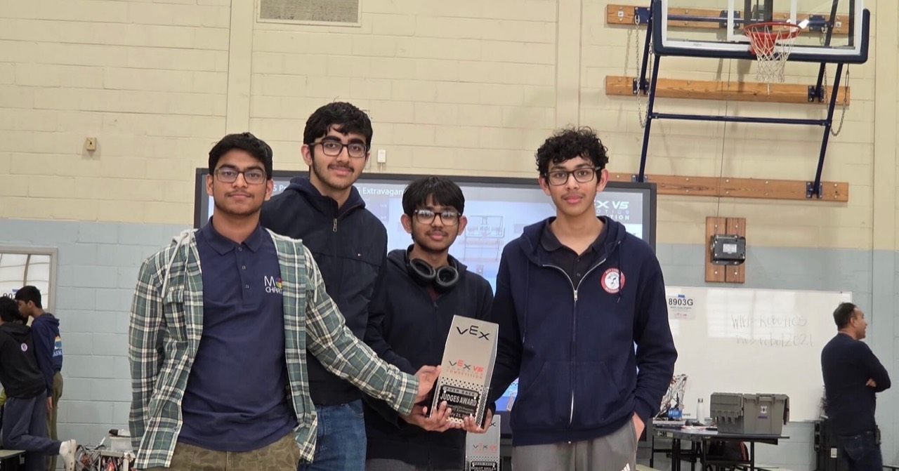
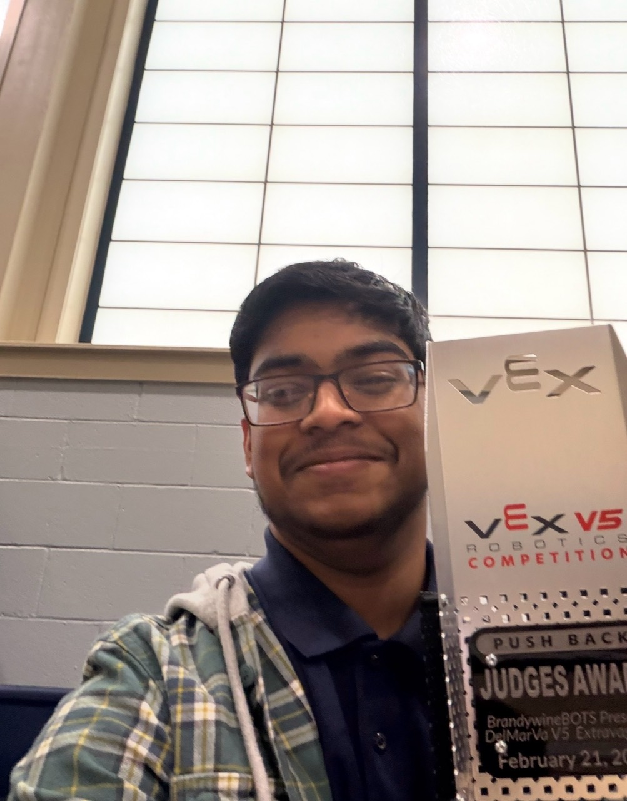
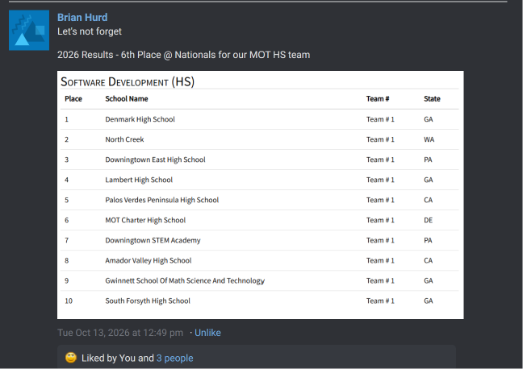
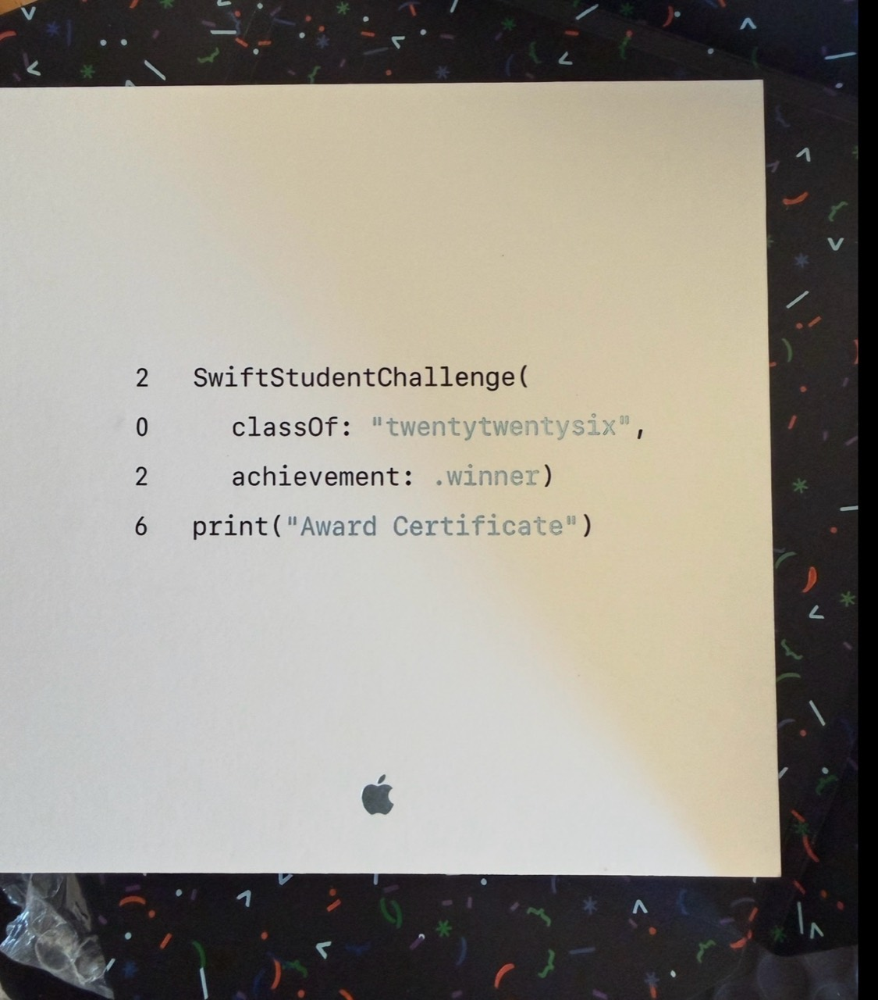
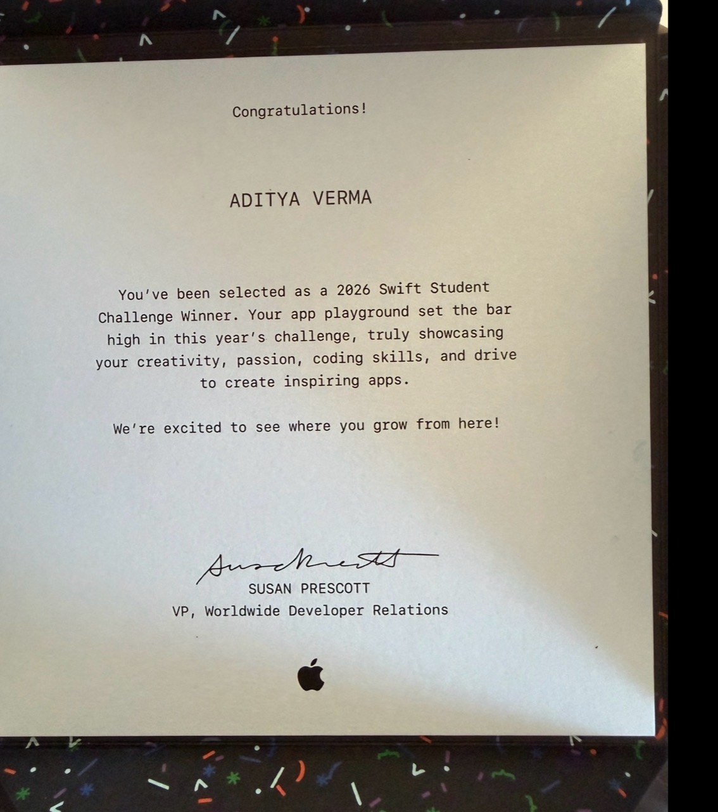
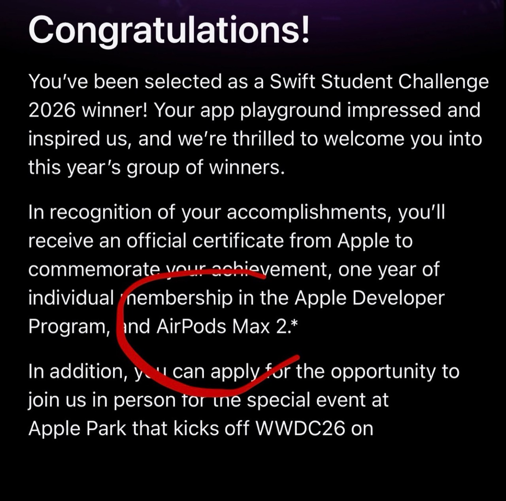

Achievements & projects
GitHubFIRST Robotics Competition — Team 365
MOE 365 (Miracles of Engineering) is a FIRST Robotics Competition Hall of Fame team. I have been on the team for two years and am currently in my second year, working on programming.
I am currently in my second-year preseason, learning ways to better program our robot this year.

In my first year, I programmed a camera that uses AI vision to detect fuel for the 2026 season and help our robot navigate autonomously using NetworkTables, PyTorch, and onboard processing.

The repository is private and managed by my team. Downloading the source requires GitHub access granted by the team, so I have attached download files here if you want to view code.
I am not able to get a roster as it’s not available to me but I have evidence of the award we won last year and the code that I made.


Here is the code for my autonomous, it was the best among my school and district in autonomous points
#pragma region VEXcode Generated Robot Configuration
// Make sure all required headers are included.
#include <stdio.h>
#include <stdlib.h>
#include <stdbool.h>
#include <math.h>
#include <string.h>
#include "vex.h"
using namespace vex;
// Brain should be defined by default
brain Brain;
// START V5 MACROS
#define waitUntil(condition) \
do { \
wait(5, msec); \
} while (!(condition))
#define repeat(iterations) \
for (int iterator = 0; iterator < iterations; iterator++)
// END V5 MACROS
// Robot configuration code.
motor leftMotorA = motor(PORT1, ratio18_1, true);
motor leftMotorB = motor(PORT2, ratio18_1, true);
motor_group LeftDriveSmart = motor_group(leftMotorA, leftMotorB);
motor rightMotorA = motor(PORT3, ratio18_1, false);
motor rightMotorB = motor(PORT4, ratio18_1, false);
motor_group RightDriveSmart = motor_group(rightMotorA, rightMotorB);
drivetrain Drivetrain = drivetrain(LeftDriveSmart, RightDriveSmart, 319.19, 295, 40, mm, 1);
controller Controller1 = controller(primary);
motor IntakeMotorA = motor(PORT5, ratio18_1, false);
motor IntakeMotorB = motor(PORT6, ratio18_1, false);
motor_group Intake = motor_group(IntakeMotorA, IntakeMotorB);
motor Feeder = motor(PORT7, ratio18_1, false);
motor Wing = motor(PORT8, ratio18_1, false);
potV2 wingPot = potV2(Brain.ThreeWirePort.A);
// generating and setting random seed
void initializeRandomSeed(){
int systemTime = Brain.Timer.systemHighResolution();
double batteryCurrent = Brain.Battery.current();
double batteryVoltage = Brain.Battery.voltage(voltageUnits::mV);
// Combine these values into a single integer
int seed = int(batteryVoltage + batteryCurrent * 100) + systemTime;
// Set the seed
srand(seed);
}
void vexcodeInit() {
//Initializing random seed.
initializeRandomSeed();
}
// Helper to make playing sounds from the V5 in VEXcode easier and
// keeps the code cleaner by making it clear what is happening.
void playVexcodeSound(const char *soundName) {
printf("VEXPlaySound:%s\n", soundName);
wait(5, msec);
}
// define variable for remote controller enable/disable
bool RemoteControlCodeEnabled = true;
// define variables used for controlling motors based on controller inputs
bool Controller1LeftShoulderControlMotorsStopped = true;
bool Controller1RightShoulderControlMotorsStopped = true;
bool Controller1UpDownButtonsControlMotorsStopped = true;
bool DrivetrainLNeedsToBeStopped_Controller1 = true;
bool DrivetrainRNeedsToBeStopped_Controller1 = true;
bool wing_auto = false;
// define a task that will handle monitoring inputs from Controller1
int rc_auto_loop_function_Controller1() {
// process the controller input every 20 milliseconds
// update the motors based on the input values
while(true) {
if(RemoteControlCodeEnabled) {
// calculate the drivetrain motor velocities from the controller joystick axies
// left = Axis3 + Axis1
// right = Axis3 - Axis1
int drivetrainLeftSideSpeed = Controller1.Axis3.position() + Controller1.Axis1.position();
int drivetrainRightSideSpeed = Controller1.Axis3.position() - Controller1.Axis1.position();
// check if the value is inside of the deadband range
if (drivetrainLeftSideSpeed < 5 && drivetrainLeftSideSpeed > -5) {
// check if the left motor has already been stopped
if (DrivetrainLNeedsToBeStopped_Controller1) {
// stop the left drive motor
LeftDriveSmart.stop();
// tell the code that the left motor has been stopped
DrivetrainLNeedsToBeStopped_Controller1 = false;
}
} else {
// reset the toggle so that the deadband code knows to stop the left motor nexttime the input is in the deadband range
DrivetrainLNeedsToBeStopped_Controller1 = true;
}
// check if the value is inside of the deadband range
if (drivetrainRightSideSpeed < 5 && drivetrainRightSideSpeed > -5) {
// check if the right motor has already been stopped
if (DrivetrainRNeedsToBeStopped_Controller1) {
// stop the right drive motor
RightDriveSmart.stop();
// tell the code that the right motor has been stopped
DrivetrainRNeedsToBeStopped_Controller1 = false;
}
} else {
// reset the toggle so that the deadband code knows to stop the right motor next time the input is in the deadband range
DrivetrainRNeedsToBeStopped_Controller1 = true;
}
// only tell the left drive motor to spin if the values are not in the deadband range
if (DrivetrainLNeedsToBeStopped_Controller1) {
LeftDriveSmart.setVelocity(drivetrainLeftSideSpeed, percent);
LeftDriveSmart.spin(forward);
}
// only tell the right drive motor to spin if the values are not in the deadband range
if (DrivetrainRNeedsToBeStopped_Controller1) {
RightDriveSmart.setVelocity(drivetrainRightSideSpeed, percent);
RightDriveSmart.spin(forward);
}
// check the ButtonL1/ButtonL2 status to control Feeder
if (Controller1.ButtonL1.pressing()) {
Feeder.spin(forward);
Controller1LeftShoulderControlMotorsStopped = false;
} else if (Controller1.ButtonL2.pressing()) {
Feeder.spin(reverse);
Controller1LeftShoulderControlMotorsStopped = false;
} else if (!Controller1LeftShoulderControlMotorsStopped) {
Feeder.stop();
// set the toggle so that we don't constantly tell the motor to stop when the buttons are released
Controller1LeftShoulderControlMotorsStopped = true;
}
// check the ButtonR1/ButtonR2 status to control Intake
if (Controller1.ButtonR1.pressing()) {
Intake.spin(forward);
Controller1RightShoulderControlMotorsStopped = false;
} else if (Controller1.ButtonR2.pressing()) {
Intake.spin(reverse);
Controller1RightShoulderControlMotorsStopped = false;
} else if (!Controller1RightShoulderControlMotorsStopped) {
Intake.stop();
// set the toggle so that we don't constantly tell the motor to stop when the buttons are released
Controller1RightShoulderControlMotorsStopped = true;
}
// check the ButtonUp/ButtonDown status to control Wing
if (!wing_auto) {
if (Controller1.ButtonUp.pressing()) {
Wing.spin(forward);
Controller1UpDownButtonsControlMotorsStopped = false;
} else if (Controller1.ButtonDown.pressing()) {
Wing.spin(reverse);
Controller1UpDownButtonsControlMotorsStopped = false;
} else if (!Controller1UpDownButtonsControlMotorsStopped) {
Wing.stop();
// set the toggle so that we don't constantly tell the motor to stop when the buttons are released
Controller1UpDownButtonsControlMotorsStopped = true;
}
}
}
// wait before repeating the process
wait(20, msec);
}
return 0;
}
task rc_auto_loop_task_Controller1(rc_auto_loop_function_Controller1);
#pragma endregion VEXcode Generated Robot Configuration
// Include the V5 Library
#include "vex.h"
// Allows for easier use of the VEX Library
using namespace vex;
competition Competition;
// User defined function
void myblockfunction_motorSetup();
// User defined function
void myblockfunction_motorSetup() {
Drivetrain.setDriveVelocity(100.0, percent);
Intake.setVelocity(200.0, rpm);
Feeder.setVelocity(200.0, rpm);
Intake.setVelocity(200.0, rpm);
}
// "when started" hat block
int whenStarted1() {
return 0;
}
// "when autonomous" hat block
// AUTO
// AUTO
// AUTO
// AUTO
int onauton_autonomous_0() {
myblockfunction_motorSetup();
IntakeMotorB.spin(reverse, 14.0, volt); // DIRECT MOTOR CONTROL START - ADITYA V2
Drivetrain.driveFor(forward, 18.0, inches, true);
wait(0.0, seconds);
Drivetrain.turnFor(right, 20.0, degrees, true);
Drivetrain.driveFor(forward, 8.0, inches, true);
Drivetrain.setDriveVelocity(10.0, percent);
Drivetrain.driveFor(forward, 7.0, inches, true);
IntakeMotorA.spin(reverse, 3.0, volt); // DIRECT MOTOR CONTROL (6)
wait(1.0, seconds);
Drivetrain.driveFor(forward, 3.0, inches, true);
Drivetrain.setDriveVelocity(50.0, percent);
Drivetrain.driveFor(forward, 0.5, inches, true);
wait(1.5, seconds);
IntakeMotorA.stop(coast); // added now
Drivetrain.turnFor(left, 70.0, degrees, true);
Drivetrain.driveFor(forward, 18.0, inches, true);
Intake.spin(forward, 14.0, volt);
return 0;
}
// AUTO END
// AUTO END
// AUTO END
// "when driver control" hat block
// DRIVE CONTROL
int ondriver_drivercontrol_0() {
myblockfunction_motorSetup();
while(true) {
int val = wingPot.value(percent); // pot value
if (Controller1.ButtonB.pressing()) {
wing_auto = true;
while (val > 40) {
Wing.spin(reverse, 100, percent);
wait(20, msec);
val = wingPot.value(percent);
}
Wing.stop(hold);
wing_auto = false;
}
if (Controller1.ButtonX.pressing()) {
wing_auto = true;
while (val < 74 ) {
Wing.spin(forward, 100, percent);
wait(20, msec);
val = wingPot.value(percent);
}
Wing.stop(hold);
wing_auto = false;
}
if (Controller1.ButtonY.pressing()) {
wing_auto = true;
while (val > 18) {
Wing.spin(reverse, 100, percent);
wait(20,msec);
val = wingPot.value(percent);
}
Wing.stop(hold);
wing_auto = false;
}
wait(20, msec); // system lag
}
return 0;
}
// DRIVER CONTROL END
void VEXcode_driver_task() {
// Start the driver control tasks....
vex::task drive0(ondriver_drivercontrol_0);
while(Competition.isDriverControl() && Competition.isEnabled()) {this_thread::sleep_for(10);}
drive0.stop();
return;
}
void VEXcode_auton_task() {
// Start the auton control tasks....
vex::task auto0(onauton_autonomous_0);
while(Competition.isAutonomous() && Competition.isEnabled()) {this_thread::sleep_for(10);}
auto0.stop();
return;
}
int main() {
vex::competition::bStopTasksBetweenModes = false;
Competition.autonomous(VEXcode_auton_task);
Competition.drivercontrol(VEXcode_driver_task);
// Initializing Robot Configuration. DO NOT REMOVE!
vexcodeInit();
whenStarted1();
}
Me and my friend build this robot over the summer. I programmed low level C++ embedded hardware in bare metal using FREERTOS, making computer vision, using GPS, and low level communication between multiple sub systems and using a variety of communication protocols.
Here is a demo video of my robot:
Here is a demo video of my firmware:
Here is the git repo with the full source code for the firmware and other details of the robot: https://github.com/houseofthe051010/Autonomous-Garden-Rover
All my humanoid training data is in this repo:
We got 1st place at states, and 6th place nationals for this app.
Youtube video of me narrating the app:
Here is the documentation:
https://docs.google.com/document/d/146sRy5TA0TR9tjei67vXmg7dbMJ08m8MFNsYYrUF6Ig/edit?usp=sharing
Here is the slideshow:
https://docs.google.com/presentation/d/1Up4PYAmF4ZMPfvydSliydCgMrAwhCzyN7vNIo9VhWRg/edit?usp=sharing
Here are the proof of placement:

Link to 2026 tsa nationals for results: https://tsamembership.registermychapter.com/finalplacement/ntc2026#
3rd place for 2024-20245 year,
Here is the repo and game:
Here is the award pics:


